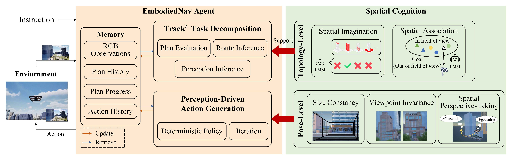
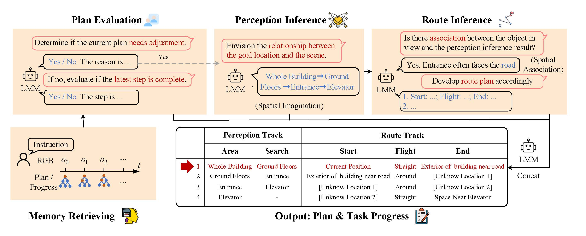

Asking an aerial agent to navigate to any location without providing a specific route in an unseen environment autonomously is one of the fundamental tasks in embodied artificial intelligence. However, embodied navigation in low-altitude urban spaces is understudied, with aerial agents facing significant perception and reasoning challenges due to open-ended three-dimensional spaces and partial observations. To fill this gap, we propose EmbodiedNav, a large multimodal model-empowered agent composed of three modules: Track^2 Task Decomposition, Perception-Driven Action Generation, and Memory. These modules are built on spatial cognition: the imagination and associative ability for macro-level spatial topology, and the acquisition of micro-level spatial positioning through size consistency, viewpoint invariance, and spatial perspective-taking. Our formulation mimics how humans navigate using only RGB visual information, without relying on maps, odometers, or depth inputs. Experimental results demonstrate the potential of our agent in urban aerial embodied navigation.
The proposed agent consists of three modules. The track^2 task decomposition module outputs the latest plan and current progress. The perception-driven action generation module converts steps in the plan into an iterative algorithm, which outputs the agent's actions. Throughout this process, the RGB observation and output of each module are updated in the memory module, providing information to other modules.
The design of embodied CoT for the Track^2 Task Decomposition module, mainly including plan evaluation, perception inference, and route inference. The perception inference and route inference stages are specifically designed based on spatial imagination and spatial association, respectively. The resulting plan is better equipped to handle goal-oriented navigation tasks in urban spaces.
Perception-driven action generation: example of flying around an area of interest while maintaining a relatively constant distance and ensuring effective camera perception. To accommodate the LMM, the field of view is divided into a grid to determine the rough location of the area of interest.
Embodied navigation results of the proposed EmbodiedNav compared to other baselines. The short, middle, and long groups correspond to ground truth trajectories of less than 63.2 meters, between 63.2 meters and 101.7 meters, and greater than 101.7 meters, respectively.
To further validate the effectiveness of our algorithm, we designed a small-batch offline experiment. Due to the complexity of UAV localization in real urban environments, we currently lack the hardware capabilities for real-time navigation experiments. We collected 50 goal-oriented navigation videos in Shenzhen, China, using a DJI Mini 4K drone.
We select several nodes within each video to examine the action outputs of our method. Closer human-like actions typically indicate higher navigation success and efficiency, and single-step decision accuracy should correlate with overall navigation success. Example is shown as following:
The quantitative results are shown as follows:
This work takes a pioneering step for goal-oriented embodied navigation in urban spaces. We propose an LMM-empowered agent based on spatial cognition mechanisms to build its embodied capabilities, which help to overcome the critical challenges in urban spaces. This agent can achieve promising navigation performance in large urban spaces relying solely on RGB observations. The experiment results illustrate the effectiveness of the proposed agent from different perspectives.